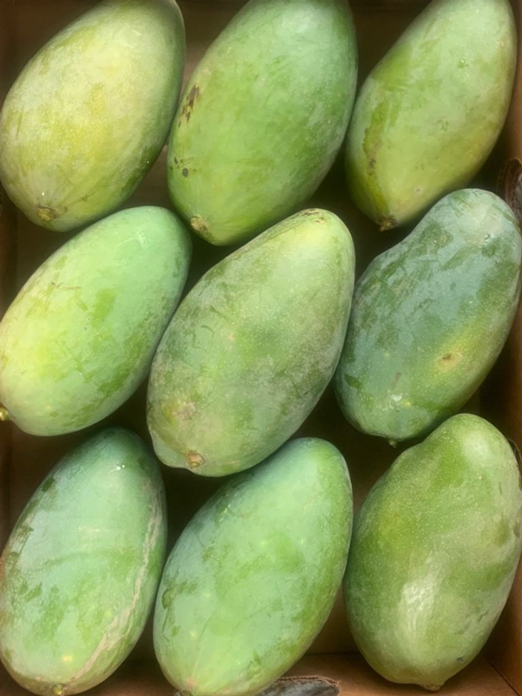
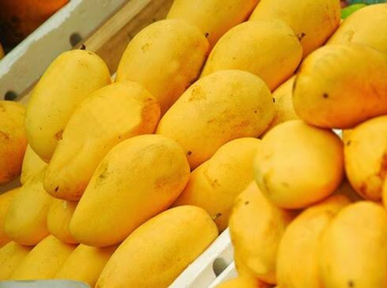
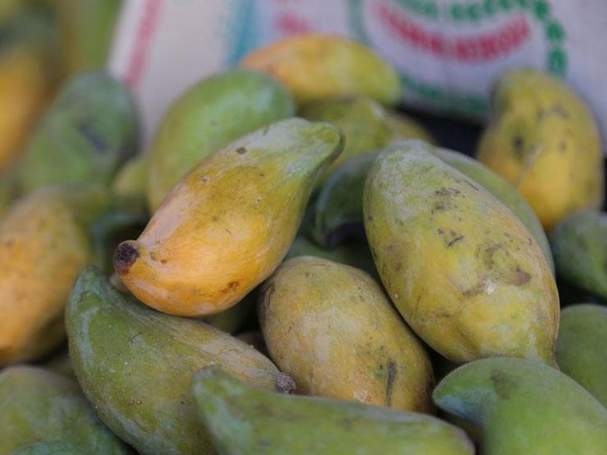
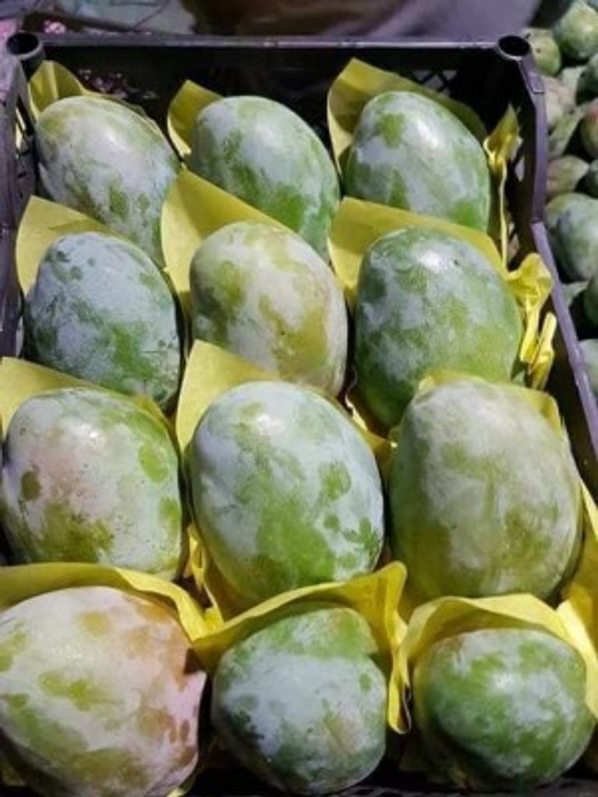
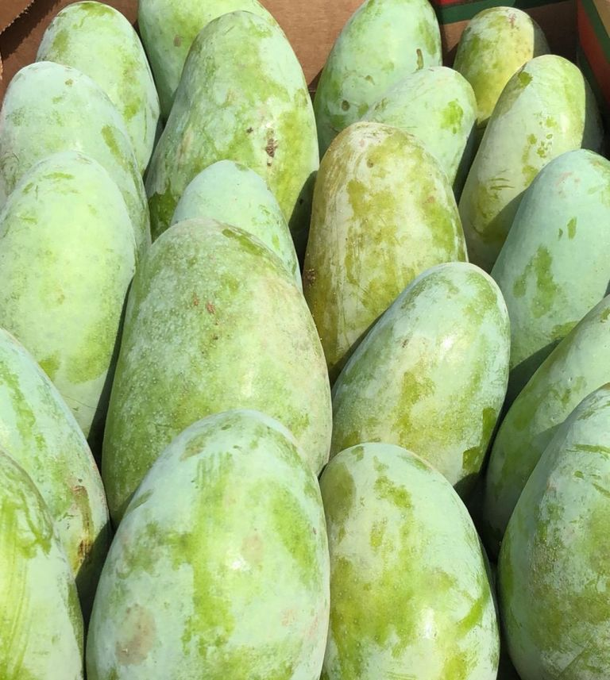
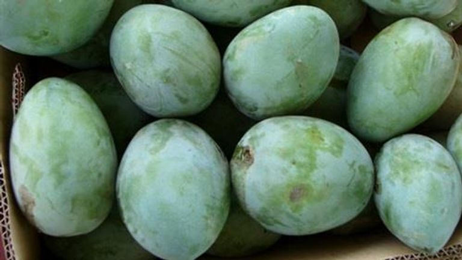

Among the many types of mangoes, we list for you the most popular types so that you can choose the mango according to your preferred type.
|
min 'anwae almanju aljadidat fi alsuwq almisrii, hajmuha mutawasit lawnuha 'akhdar fatih wabaed al'asfari, wsumk qashratuha mutawasiti, min aldaakhil lawnuha asfar wallahm kathir walbadhrat mutawasitatun. It is one of the new types of mango in the Egyptian market. |
 | Sugar mango is one of the famous types of Egyptian mango, which is easy to recognize, as its peel is thin and often soft, and its color is yellow to orange. |
 |
| Owais Mango One of the best types of mangoes in Egypt is the Owais/Owaisi mango, which is characterized by a medium size, neither huge nor small. |
 | Mango Kate The outer skin of the Kate mango tends to be green with purple and red overlapping at the top of the fruit. Its taste can be sweet,,but it tends to be a little sour. |
 |
| Indian mango is considered one of the common types that many people prefer. It is distinguished in the market by being long and oval, and the color of its peel is light green, while the flesh inside is yellow. |
 | Butter mango. The size of the fruit is large, its color is green, the thickness of its peel is medium, and it is easy to cut. The size of the seed is large, and the color of the mango on the inside is yellow-orange, and it has many fibers and is soft on the inside. |
 |
| for more details | |||